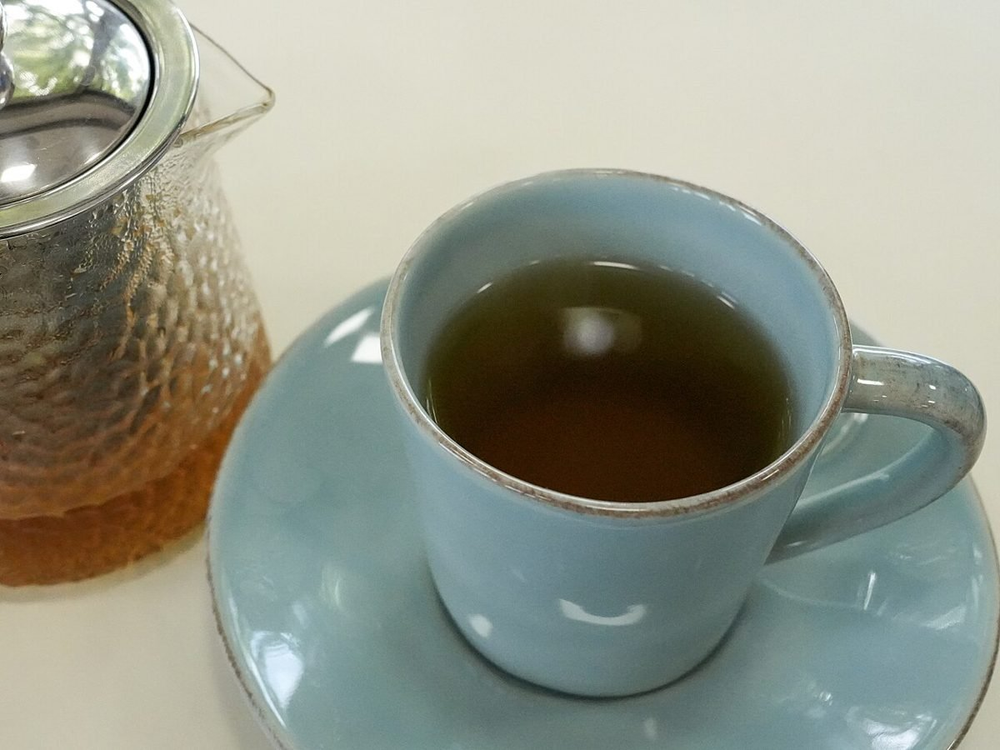
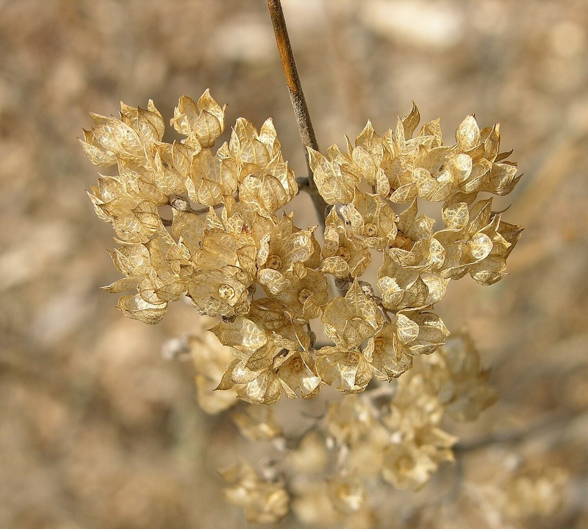
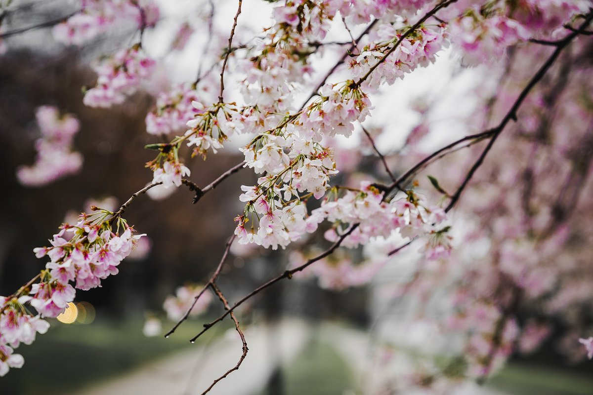

メニュー

メニュー・料金は準備中です(お問い合わせください)
掲載できる内容がそろい次第、こちらに載せる予定です。いまのところ、品名や価格は掲載していません。

内容を知りたいときは
お電話か、Instagramのメッセージでおたずねください。


掲載できる内容がそろい次第、こちらに載せる予定です。いまのところ、品名や価格は掲載していません。

お電話か、Instagramのメッセージでおたずねください。

掲載写真はフリー素材のイメージで、お店の実際の様子ではありません。他地域で撮影されたもの、撮影地が不明なものを含みます。
電話する 080-4175-5047